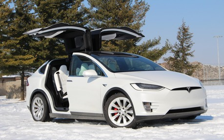

Tesla, Inc. (precedent Tesla Motors, Inc.), este o companie americană de automobile și energie
cu sediul în Palo Alto, California.
Compania este specializată în fabricarea de mașini electrice și, prin filiala sa SolarCity, în fabricarea
panourilor solare. Acesta operează mai multe uzine de producție și de asamblare, cum ar fi Gigafactory 1 în
apropiere de Reno, Nevada și principalul său centru de fabricație de vehicule la Tesla Factory din Fremont,
California.
Începând cu 2019, Tesla vinde mașini Model S, Model X și Model 3. Accepta rezervări pentru
vehiculele Model Y, Roadster (2020), Cybertruck și Semi. Tesla vinde, de asemenea, baterii Powerwall,
Powerpack și Megapack, panouri solare, plăci de acoperiș solar și unele produse conexe.
Prezentare generală
Tesla a fost fondată în iulie 2003, de către inginerii Martin Eberhard și Marc Tarpenning,
sub numele de Tesla Motors. Numele companiei este un omagiu adus inginerului Nikola Tesla. La finanțarea
timpurie a seriei A, Tesla Motors i s-au alăturat Elon Musk, J. B. Straubel și Ian Wright, cu toți cărora li
se permite retroactiv să se numească co-fondatori ai companiei. Musk, care anterior a ocupat funcția de
președinte și este actualul director executiv, a spus că a avut în vedere Tesla Motors ca o companie de
tehnologie și un producător independent de autovehicule, care vizează în cele din urmă să ofere mașini
electrice la prețuri accesibile consumatorului mediu. Tesla Motors și-a scurtat numele la Tesla în februarie
2017.
Despre Tesla Roadster 2008
Tesla Roadster este un supercar automobil electric pe baterie (VEB) produs de firma Tesla Motors din
California, Statele Unite.
Roadster-ul a fost singurul vehicul electric aflat în producție de serie capabil să circule pe autostradă
(spre deosebire de prototipuri sau flote de vehicule aflate în evaluare) în America de Nord sau Europa.
Tesla a produs peste 1,200 de automobile vândute în ce puțin 28 de țări până în iulie 2010. Tesla a început
să producă modele cu volanul pe dreapta la începutul lui 2010 pentru Marea Britanie, Japonia, Hong Kong și
Singapore.
Despre Tesla Model S
Tesla Model S este un automobil de lux cu propulsie electrică construită de Tesla Motors
(California, Silicon Valley) în producție de serie mare din iunie 2012.
Model S P100D este primul automobil electric capabil de a parcurge distanțe lungi (500 km
(EPA), 615 km (NEDC)) fără reîncărcarea bateriilor.
Este disponibil doar cu tracțiune pe patru roți. Modelul dispune de Acumulator Li-ion (max 85
kWh) amplasat în podea, sub compartimentul pentru pasageri.
Pentru accelerație la 100 km/h Model S are nevoie, în funcție de acumulator, între 5,6 și 6,2
Secunde. Modelul P100D (Performance) însă atinge 100 km/h în doar 2,7 secunde, comparabil cu Lamborghini sau
Ferrari.
Despre Tesla Model 3
Tesla Model 3 este un sedan electric cu patru uși dezvoltat de Tesla.
Versiunea Model 3 Standard Range Plus oferă o gamă completă electrică de 250 de mile (402 km),
iar versiunile Long Range oferă 325 km.
Cel puțin un model 3 a fost condus cu 975 km (606,2 mile) cu o singură încărcare.
Modelul 3 poartă hardware complet pentru self-driving cu actualizări periodice de software
adăugând funcționalitate.
Despre Tesla Model X
Modelul Tesla X este un SUV de dimensiuni medii, tot electric, de lux fabricat de Tesla, Inc.
Vehiculul este unic în concepția că folosește uși cu aripi de falcon în loc de uși
tradiționale auto.
Prototipul a fost dezvăluit în studiourile de proiectare Tesla din Hawthorne, California, pe 9
februarie 2012.
Modelul X are un EPA oficial evaluat 402–523 km (250-225 km) și un echivalent de economie de
combustibil combinat și consum energie pentru AWD P90D a fost evaluat la 89 mpg-e (39 kW⋅h / 100 mi)

Despre Tesla Model Y
Tesla Model Y este un vehicul utilitar electric compact (CUV), în curs de dezvoltare de Tesla,
Inc.
A fost dezvăluit în martie 2019, cu livrări planificate să înceapă în vara anului 2020.
Este al doilea vehicul bazat pe platforma Model 3 sedan.
Modelul Y va oferi scaune opționale in al treilea rând pentru o capacitate de șapte persoane
Despre Tesla Roadster 2020
Tesla Roadster este o viitoare mașină sport cu patru locuri, cu baterie, electrică, realizată
de Tesla, Inc.
Tesla a declarat că va fi capabil de 0 până la 97 km / h (0 până la 60 mph) în 1,9 secunde,
mai repede decât orice mașină legală pe stradă până în prezent la anunțul său din noiembrie 2017
Roadsterul este succesorul primei mașini de producție Tesla, Roadsterul din 2008.
Tesla indică faptul că vânzările Roadster vor începe în 2020, deși nu înainte ca Tesla Model Y
să fie scos la vânzare.
Despre Tesla Cybertruck
Tesla Cybertruck este un vehicul comercial cu baterii electrice în curs de dezvoltare de
Tesla, Inc
Au fost anunțate trei modele, cu o estimare a distanței de 250–500 mile (400–800 km) și un
timp aproximativ de 0–60 km / h de 2,9–6,5 secunde, în funcție de model.
Scopul declarat al Tesla în dezvoltarea Cybertruck este de a oferi un substitut energetic
durabil pentru cele aproximativ 6.500 de camioane cu combustibil fosil vândute pe zi în Statele Unite.
Prețul de bază al modelului de tracțiune cu roțile din spate va fi de 39.900 USD, modelele cu
tracțiune integrală începând de la 49.900 USD. Producția Cybertruck urmează să înceapă în 2021, mai multe
modele fiind oferite până în 2022.
Despre Tesla Semi
Tesla Semi este o camion semiremorcă 8 class electrică cu baterii , în curs de dezvoltare de
Tesla, Inc .
Două vehicule de concept au fost dezvăluite în noiembrie 2017 și este prevăzută producția
limitată până la sfârșitul anului 2020.
Compania a anunțat inițial că camionul va avea o autonomie de 500 de mile (805 km) la o
încărcare completă și cu noile sale baterii va putea rula pe 400 de mile (640 km) după o încărcare de 80% în
30 de minute folosind o statie solara de incarcare "Tesla Megacharger".
CEO-ul Tesla, Elon Musk, a spus că Semi va veni standard cu Tesla Pilot Automat care permite
conducerea semi-autonomă pe autostrăzi